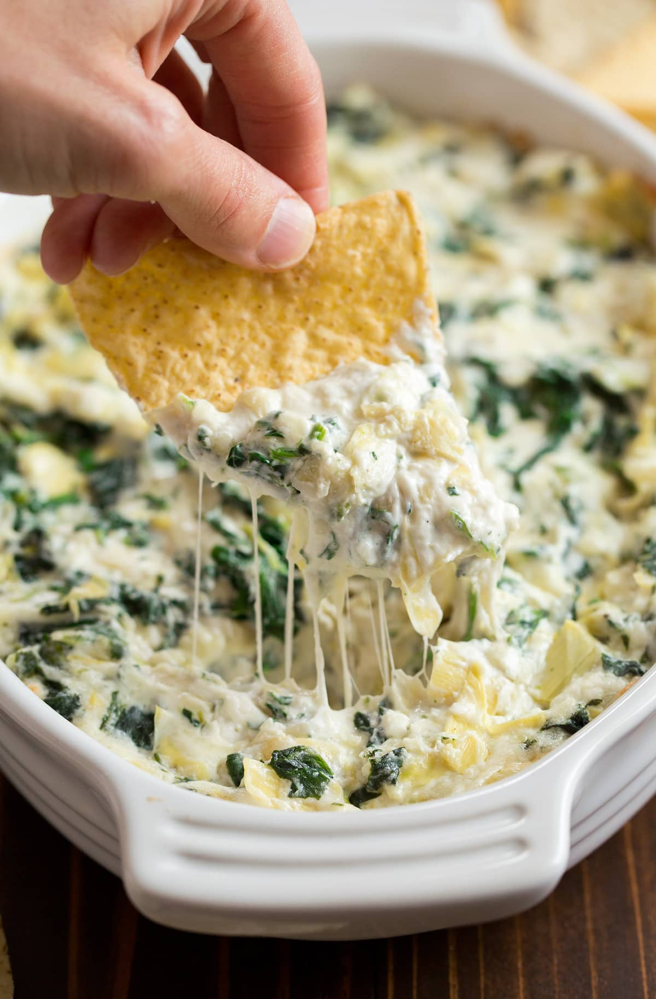

Artichoke Dip

So good that it will make you fight for the last chip
A rich creamy dip loaded with spinach and artichokes.
Simple to make and always a favourite among friends and family
Ingredients
- 8 oz. cream cheese, well softened
- 1/4 cup sour cream
- 1/4 cup mayonnaise
- 1 garlic glove, minced
- 1/2 cup of shredded mozzarella cheese
- 2/3 cup shredded parmesan cheese
- 1 can of quartered artichoke hearts
- 6 oz of fresh spinach
Steps
- Pre-heat oven to 350F.
- In a mixing bowl stir together cream cheese, sour cream,
mayonnaise, garlic, parmesan, mozzarella.
- Stir in aritchokes and spinach.
- Add mixture to a baking dish spreading the mixture evenly.
Bake for around 20 minutes.
- Served warm with torilla chipes, toasted pita bread or crackers.
Main page